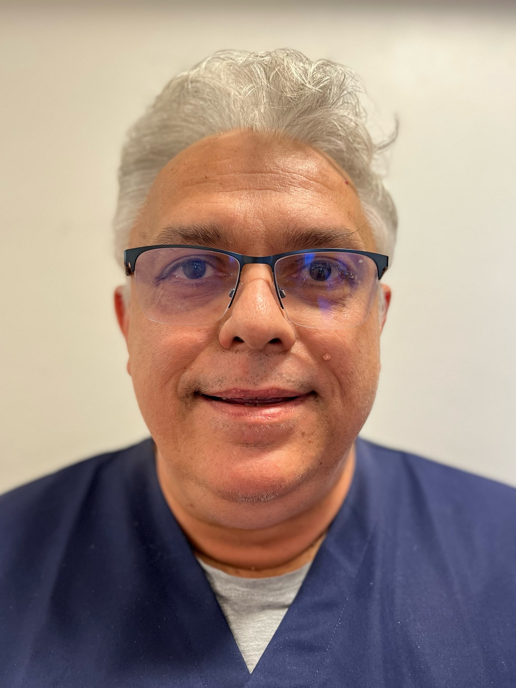
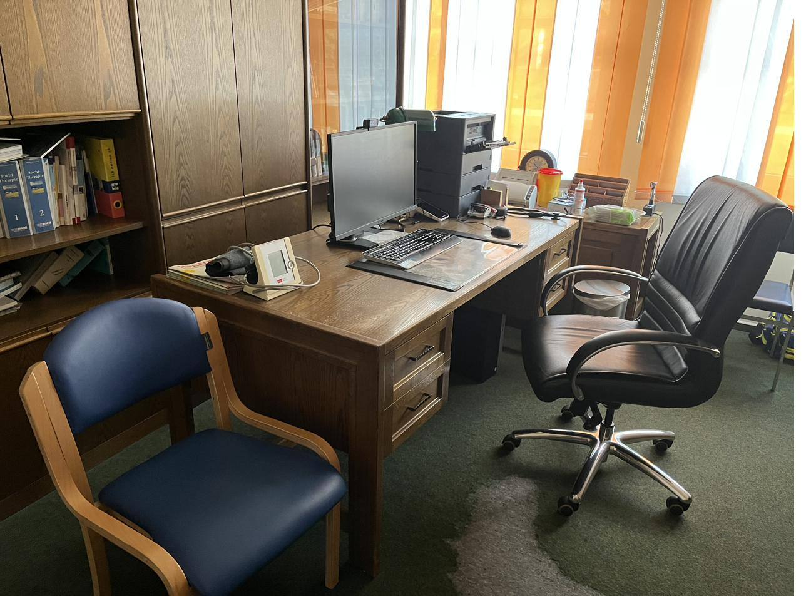

Praxis & Team
Ein kleines Team, kurze Wege und ein fester Ansprechpartner – lernen Sie uns kennen.

René Lutz
Facharzt für Innere Medizin · Zusatzbezeichnungen Naturheilverfahren und Akupunktur
Seit 2008 bin ich als hausärztlich tätiger Internist in Schweinfurt niedergelassen. Die Innere Medizin ist die Grundlage meiner Arbeit – die hausärztliche Begleitung von Menschen über viele Jahre ist ihr Kern.
Mich interessiert dabei nicht nur der einzelne Befund, sondern der Zusammenhang: Wie passen Beschwerden, Vorgeschichte und Lebenssituation zusammen? Diese Frage steht am Anfang jeder Behandlung – und oft auch am Anfang der Lösung.
Beruflicher Werdegang
- Geboren 1968 in Schweinfurt
- Studium der Humanmedizin an der Julius-Maximilians-Universität Würzburg
- Arzt im Praktikum am Klinikum Nürnberg Süd, Kardiologie
- Facharztweiterbildung Innere Medizin am Krankenhaus St. Josef, Schweinfurt
- Zusatzbezeichnungen Naturheilverfahren und Akupunktur
- Seit 2008 niedergelassen in eigener Hausarztpraxis in Schweinfurt
Mitgliedschaften
- Bayerischer Hausärzteverband
- Berufsverband Deutscher Internistinnen und Internisten (BDI)
- Deutsche Gesellschaft für Allgemeinmedizin und Familienmedizin (DEGAM)
- Deutsche Gesellschaft für Reisemedizin
Unser Praxisteam
Drei erfahrene Medizinische Fachangestellte sind Ihre ersten Ansprechpartnerinnen – am Telefon, am Empfang und bei vielen Untersuchungen.
Astrid Kirchgeßner
Medizinische Fachangestellte
Labor
Irmhilde Lenhart
Medizinische Fachangestellte
Anmeldung
Stefanie Backes
Medizinische Fachangestellte
Anmeldung
Fannia Lutz
Gesundheits- und Krankenpflegerin
Backoffice
Unser Team kennt viele Patientinnen und Patienten seit Jahren persönlich – kurze Wege und vertraute Gesichter gehören bei uns zur Behandlung dazu.
Unsere Räume
Die Praxis liegt zentral in der Schweinfurter Innenstadt im Ärztehaus am Jägersbrunnen – gut erreichbar zu Fuß, mit dem Rad und mit öffentlichen Verkehrsmitteln.
Wir gestalten unsere Räume so, dass man sich darin wohlfühlen kann: ruhig, hell und mit warmen Materialien. Ein Arztbesuch ist oft mit Anspannung verbunden – die Umgebung soll das Gegenteil unterstützen.
Derzeit renovieren wir unsere Sprechzimmer. Ab Herbst 2026 empfangen wir Sie in neu gestalteten Räumen – aktuelle Bilder folgen hier.

Lernen Sie uns kennen
Wir nehmen neue Patientinnen und Patienten auf – rufen Sie uns einfach an.
09721 21206 anrufen